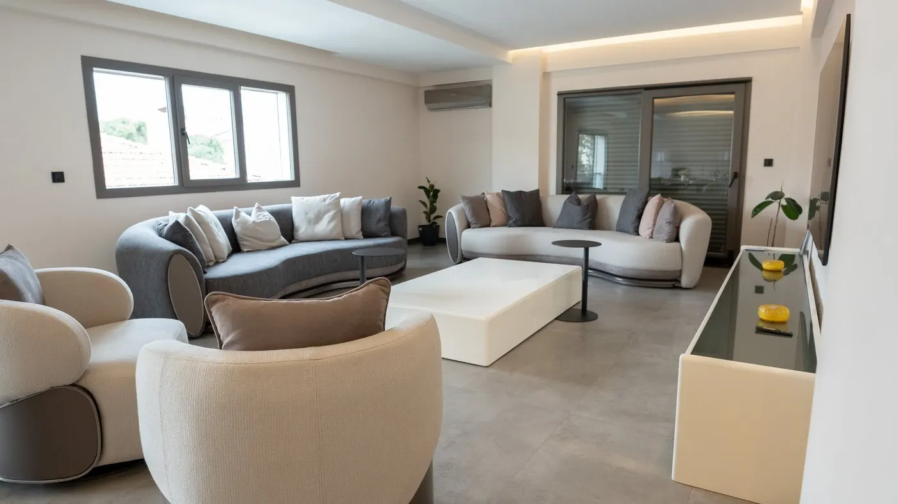

Konut / İç Mimari & Uygulama
Zora Ailesinin Evi
Mevcut bir yapının, yeni yaşam senaryolarına göre tamamen kişiselleştirilmiş bir aile evine dönüşümü.
Projenin Hikayesi
Bkare Mimarlık İnşaat imzasıyla kişisel bir yaşam alanı.
Bkare Mimarlık İnşaat olarak, yakın dostumuz Sinan Bey ve değerli eşi için hayata geçirdiğimiz Zora Ailesinin Evi, mevcut bir yapının hayal gücü ve profesyonel dokunuşlarla nasıl tamamen kişiselleştirilmiş bir yaşam alanına dönüştüğünün güçlü örneklerinden biridir.
Firmamız için özel bir yere sahip olan bu projede, evi devraldığımızda kullanılabilir durumda olan iç mekanı, yeni çiftimizin zevklerine ve ihtiyaçlarına göre sıfırdan kurguladık. İç mekandaki mevcut duvarları yıkarak salonu, mutfağı ve diğer yaşam alanlarını yeni kullanım senaryolarına göre yeniden inşa ettik.

Mutfak
Modern, geniş ve fonksiyonel bir ada mutfak.
Mevcut mutfağı tamamen yenileyerek mekanın genişliğini en verimli şekilde kullandık. Depolama hacmini artırmak için merkezde şık ve güçlü bir ada mutfak kurguladık.
- Adanın ön yüzünde maksimum kapasiteli çekmeceli depolama alanları tasarlandı.
- Arka yüz, günlük yemekler ve kahve keyfi için iki kişilik yüksek masa formatında çözüldü.
- Tüm dolap ve kapak sistemlerinde frenli ve çift açılımlı mekanizmalar tercih edildi.
- Misafir ağırlamaları için salon bölümünde bağımsız bir yemek masası alanı planlandı.
Antre
Şık ve akılcı bir karşılama alanı.
Koridor bölümünde yer alan mevcut elektrik panosu ve vestiyer alanını, ev sahiplerinin renk ve tasarım tercihleri doğrultusunda tamamen revize ettik.
- Merdivene bağlanan kısıtlı alanda büyük kapalı vestiyer yerine hafif bir dresuar tasarlandı.
- Arka planda tüm evin mobilya diliyle uyumlu fugalı lambiri kullanıldı.
- Anahtar, parfüm ve günlük eşyalar için pratik bir toplanma noktası oluşturuldu.
- Yanına kompakt ve işlevsel bir ayakkabılık/vestiyer dolabı entegre edildi.
Ebeveyn Süiti
Çatı dubleksinde lüks ve konfor.
Üst katta, Sinan Bey'in talebi doğrultusunda mevcut üç ayrı odayı birleştirerek ferah bir ebeveyn süiti yarattık.
- Çatı eğiminden kaynaklanan üçgensel alanlar özel ölçü kısa dolaplarla değerlendirildi.
- Füme cam kapaklı giyinme dolapları, hareket sensörlü gizli LED aydınlatmayla desteklendi.
- Giyinme bölümünün merkezine cam üst yüzeyli özel mücevher adası konumlandırıldı.
- Üst kattaki atıl mutfak alanı yeniden dizayn edilip boyanarak modern bir görünüme kavuştu.
Altyapı
Yenilenen banyolar ve teknik iyileştirmeler.
Estetik yeniliklerin yanında yapının teknik ömrünü uzatacak altyapı iyileştirmelerini de titizlikle gerçekleştirdik.
- Su alma riski taşıyan çatı bölgesinde yalıtım ve izolasyon çalışmaları tamamlandı.
- Zemin seramikleri tamamen yenilendi.
- Alt ve üst kattaki banyolar baştan aşağı ele alındı.
- Çatı eğimi nedeniyle standart dışı kalan alanlara özel üretim duşakabin sistemleri uygulandı.
Proje Galerisi
Zora Ailesinin Evi detayları.
{kind=link}
{kind=link}
{kind=link}
{kind=link}
{kind=link}
{kind=link}
{kind=link}
{kind=link}
{kind=link}
{kind=link}
{kind=link}
{kind=link}
{kind=link}
Ortaya Çıkan Sonuç
Yeni hayat için karakterli, fonksiyonel ve kişisel bir ev.
Bkare Mimarlık İnşaat olarak, Zora Ailesi'ne yeni hayatlarında mutluluklar diler; hayallerindeki yaşam alanını gerçeğe dönüştürme yolculuğunda bize güvendikleri için teşekkür ederiz.
Fonksiyonel Mutfak
Ada, bar ve güçlü depolama.
Giyinme Alanı
Füme cam ve sensörlü LED.
Akıllı Depolama
Çatı eğimindeki atıl alanlar değerlendirildi.
Teknik Koruma
Çatı izolasyonu ve yenilenen banyolar.

Sizin Projeniz
Hayalinizdeki evi birlikte tasarlayalım.
Ekibimizle iletişime geçin, mevcut alanınızı ihtiyaçlarınıza göre yeniden kurgulayalım.